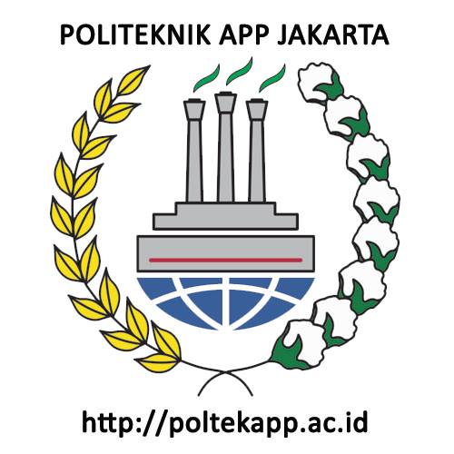

ANALISIS DATA NILAI PRODUKSI KOPI DAN NILAI EKSPOR KOPI INDONESIA TAHUN 2008-2021
Metode Penelitian Politeknik APP Jakarta
Author
Putri Widiawati
Published
January 20, 2023

1 Pendahuluan
1.1 Latar Belakang
Sektor perkebunan Indonesia berperan penting dalam meningkatkan perekonomian nasional, peran tersebut mampu menerima tenaga kerja dalam jumlah besar, menghasilkan devisa negara dan memberikan kontribusi terhadap pendapatan nasional. Selain itu, sektor perkebunan di negara berkembang seperti Indonesia merupakan sektor yang sangat penting untuk memenuhi kebutuhan pangan dalam negeri. Peran penting sektor perkebunan Indonesia juga dapat dilihat dari neraca perdagangan dan neraca pembayaran yaitu. pendapatan berlebih. Sisanya diperoleh dari hasil perkebunan yang diekspor ke luar negeri atau pasar internasional, serta produk impor.
Indonesia merupakan negara berkembang yang menganut perekonomian terbuka kecil yang berarti terdapat perdagangan internasional yaitu ekspor. Salah satu ekspor terbesar Indonesia dari sektor perkebunan adalah kopi. Kopi merupakan salah satu produk komersial terpenting di dunia dan dilestarikan oleh berbagai negara. Produk ini banyak diminati sehingga kopi Indonesia menduduki peringkat ketiga penghasil kopi terbesar di dunia dan pemasok terbesar keempat di dunia.
1.2 Batasan Masalah
Berdasarkan beberapa identifikasi masalah di atas, maka dalam hal ini masalah yang diteliti harus dibatasi. Membatasi masalah ini adalah tujuannya memusatkan perhatian pada penelitian dengan memperoleh kesimpulan yang mendalam pada aspek yang diteliti. Lingkup masalah pada penelitian ini yaitu, sebatas data produksi kopi dan data maupun keadaan ekspor kopi Indonesia.
1.3 Rumusan masalah
Dalam penelitian ini rumusan masalah yang akan dibahas, yaitu:
Apakah Produksi kopi Indonesia memenuhi permintaan ekspor dunia?
Mengapa kopi Indonesia diminati oleh berbagai negara?
1.4 Tujuan dan manfaat penelitian
Berikut tujuan penelitian dari penelitian yang akan dilakukan:
Untuk mengetahui pemenuhan Indonesia dalam permintaan ekspor kopi dunia
Untuk mengetahui minat negara lain terhadap kopi Indonesia
Berikut manfaat dari penelitian yang akan dilakukan:
Hasil penelitian diharapkan dapat menjadi sumbangan pemikiran mengenai alur ekspor kopi Indonesia dengan jumlah produksi yang dipunya Indonesia.
Hasil penelitian ini diharapkan dapat menjadi dasar pengambil kebijakan dalam upaya pengembangan dan peningkatan ekspor kopi Indonesia ke pasar dunia.
2 Studi Pustaka
2.1 Teori
Kopi adalah salah satu komoditi perkebunan yang memiliki nilai jual tumbuh di antara tanaman perkebunan lainnya. Selain itu, kopi juga membreikan kontribusi yang signifikan sebagai sumber devisa nagara. Tanaman kopi merupakan sumber pendapatan bagi petani kopi untuk menjamin kehidupan ekonomi keluarga petani kopi tidak kurang dari setengah juta orang petani kopi yang berada di tanah air Indonesia. Komposisi bentuk Bisnis perkebunan kopi Indonesia dilakukan oleh Perkebunan Rakyat (PR) dengan bobot 96% dari luas wilayah di Indonesia, dan sisanya 2% adalah Perkebunan Besar Negara (PBN), dan 2% merupakan perkebunan besar swasta (PBS).
Perdagangan internasional adalah transaksi baik berbentuk suatu barang atau bisa juga berupa tindakan (jasa) yang melibatkan pembeli dan penjual untuk memenuhi kebutuhan satu sama lain mencakup global, artinya terdapat banyak kontribusi dari berbagai negara. Dalam transaksi perdagangan internasional hal yang paling penting adalah sisi ekspor, karena ekspor merupakan penyumbang devisa, dapat menyerap tenaga kerja sehingga terjadi pengurangan pengangguran dan juga salah satu penerima pajak terbesar untuk Indonesia. Selain itu jika dilihat dari segi perusahaan, perusahaan pengeksor juga memiliki pengaruh yang kuat daripada perusahaan pengimpor.
2.2 Kerangka Penelitian
Kerangka penelitian adalah pemikiran dari dua variabel yang kemudian disatukan sehingga membentuk pola pikir. Pada penelitian ini produksi kopi menjadi variabel X dan Nilai Ekspor kopi menjadi variabel Y, kedua variabel ini nantinya akan di regresi sehingga akan membentuk pola pikir bahwasannya apakah produksi kopi akan memenuhi permintaan ekspor kopi dunia sehingga kita dapat mengetahui juga minat dari pengimpor kopi Indonesia.
3 Metode Penelitian
3.1 Data
Jenis data dalam penelitian ini adalah kuantitatif dengan bentuk data sekunder beruapa time series tahunan, yaitu variabel produksi terhadap jumlah ekspor kopi untuk mendapatkan hasil Jumlah pemenuhan permintaan ekspor kopi. Data analisis menggunakan data dari tahun 2008-2021 yang diambil dari Badan Pusat Statistik (BPS).
Tahun
Produksi Kopi
Nilai Ekspor Kopi
2008
698.000,00
467.852,30
2009
682.500,00
510.030,40
2010
686.900,00
432.721,10
2011
638.600,00
346.062,60
2012
691.160,00
447.010,80
2013
675.900,00
532.139,30
2014
643.900,00
382.750,30
2015
639.400,00
499.612,70
2016
663.900,00
412.370,30
2017
716.100,00
464.198,30
2018
756.000,00
277.411,20
2019
752.500,00
355.766,50
2020
753.900,00
375.555,90
2021
774.600,00
384.510,60
3.2 Metode Analisis
Berikut alat bantu pengolahan data, package, dan jenis model yang ditampilkan melalui Rscript
Kopi berperan dalam sisi perdagangan, karena kopi merupakan produk tanaman yang banyak diperdagangkan dan merupakan produk terpenting. Persentase ekspor produk kopi Indonesia mencapai 67% dari total produksi, sedangkan sisanya untuk konsumsi dalam negeri. Ekspor kopi didukung oleh sebagian besar produksi. Menyadari potensi ekspor kopi, Kementerian Perdagangan mengklasifikasikan kopi sebagai salah satu dari sepuluh produk ekspor yang diharapkan ekspornya terus meningkat sehingga dapat terus mendukung kinerja ekspor Indonesia secara keseluruhan.
Kinerja ekspor dapat dinilai dari laju pertumbuhan baik dari sisi nilai ekspor dan tingkat produksi dalam negeri. Pengembangan ekspor yang berhasil adalah jika laju pertumbuhan ekspor tinggi dan komposisi yang digunkaan menggunakan kualitas terbaik. Selama periode 2008-2018 keadaan ekspor kopi masih naik turun, kemungkinan yang terjadi adalah pemenuhan permintaan dalam negeri. Seperti keadaan di tahun 2018, ekspor kopi Indonesia mengalami penurunan yang drastis, hal ini dikarenakan permintaan kopi dalam negeri sedang tinggi.
Ekspor kopi ditahun 2019-2021 mengalami kenaikan ekspor secara bertahap walaupun dengan keadaaan dunai sedang dilanda Pandemi. Pada era ini ekspor dunia sedang terjadi gejolak, namun Indonesia terus berekspansi dalam pasar dunia. Kenaikan ekspor pada tahun 2019-2021 memang tidak sebesar tahun-tahun sebelumnya, tetapi ekspor ini telah bangkit dari ekspor tahun 2018. Selain itu produksi dalam negeri juga terus meningkat, dimana pemerintah terus melakukan perluasan lahan komoditi kopi dengan tujuan memenuhi permintaan ekspor dan domestik.
Hal Ini dapat disimpulkan bahwasannya kopi Indonesia memiliki peminat yang banyak karena jumlah permintaan ekspor dan permintaan domestik yang terus naik. Kopi Indonesia memang memiliki citarasa yang kuat dan terdapat kopi dengan jenis yang paling dicari seperti Arabica dan robusta. Di luar negeri juga kopi digunakan sebagai menu wajib untuk disajikan sehingga keberadaan kopi sangat dibutuhkan. Hal lain yang dapat disimpulkan yaitu pemenuhan ekspor kopi Indonesia yang dilaksanakan dengan baik dengan menyesuiakan juga kebutuhan domestik sehingga pemerintah Indonesia terus meningkatkan produksi.
4.2 Analisis Masalah
Dapat dilihat dari tabel di atas bahwa ini ggplot regresi tersebut.
Figure 1: City and highway mileage for 38 popular models of cars.Color by number of cylinders
5 Kesimpulan
Kopi Indonesia mengalami ketidakstabilan dalam ekspornya dikarenakan masih butuh pemenuhan permintaan kopi domestik. Kopi Indonesia memiliki peminat yang tinggi sehingga Indonesia masih kekurangan lahan perkebunan untuk perkembangannya. Upaya pemerintah dalam meningkatkan perluasan tanah ternyata kurang mencukupi karena lambatnya dalam kebijakan perluasan areal.
Saran yang dapat diberikan yaitu dengan melaukakn kebijakan revitalisasi perkebunan kopi Indonesia oleh pemerintah perlu dilakukan. Penanaman dapat dihidupkan kembali dengan mempercepat perluasan areal perkebunan dan regenerasi tanaman untuk meningkatkan produktivitas kopi, produksi dan ekspor Indonesia. Indonesia dapat meningkatkan pangsanya pasar dengan penekanan pada ekspor ke negara-negara dengan pertumbuhan PDB yang tinggi agar Indonesia tetap bisabersaing dan berskpansi di pasar dunia.
6 Referensi
Meiri, A., Nurmalina, R., & Rifin, A. (2013). ANALISIS PERDAGANGAN KOPI INDONESIA DI PASAR INTERNASIONAL. Jurnal Tanaman Industri Dan Penyegar, 4(1), 39–46.
Sahat, S.F., Nuryartono, N., & Hutagaol, M. P. (2016). ANALISIS PENGEMBANGAN EKSPOR KOPI DI INDONESIA. Jurnal Ekonomi Dan Kebijakan Pembangunan, 5(1), 63–89.
Martauli, E. D. (2018). ANALYSIS OF COFFEE PRODUCTION IN INDONESIA. Journal of Agribusiness Sciences, 1(02), 112–120.